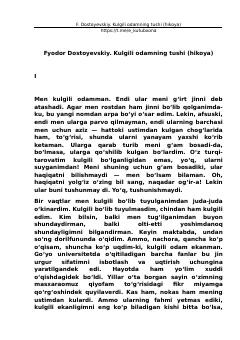

KOInsonning hayot mazmuni va ma’naviy uyg‘onishi haqidagi ta’sirli falsafiy hikoya.
Asar hayotning mazmuni, yolg‘izlik va insoniy qadriyatlar haqida fikr yurituvchi bosh qahramonning o‘ziga xos tushini hikoya qiladi. O‘zini kulgili deb bilgan va jamiyatdan uzoqlashgan insonning tushida boshqa bir mukammal dunyoni ko‘rishi uning dunyoqarashini tubdan o‘zgartirib yuboradi. Ushbu fojiali va falsafiy hikoya o‘quvchini chuqur o‘ylantiradi.